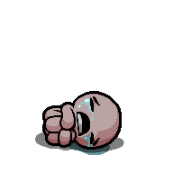
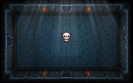

Isaac

esse chefe pode ser encontrado nos andares:
- Cathedral
- O void


o chefe começa a batalha deitado no meio da sala, e não fará nada antes de tomar qualquer dano. ao decorrer da luta quanto mais o chefe toma dano, mais padrões de ataques o chefe libera, e cada mais chefe isaac ascende
se você derrotar o chefe isaac pelo menos 5 vezes, você libera para as próximas runs o item polaroid que pode ser pego toda vez em que derrotar o pé da mãe.
se você derrotar o chefe isaac quando tiver com o item polaroid, você pode poderá entrar no andar do báu, liberando assim a batalha contra o chefe blue baby
o chefe isaac pode ser encontrado no andar VOID, porem derrotar ele nesse andar não te dá conquista para liberar itens